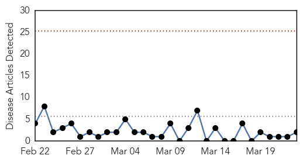
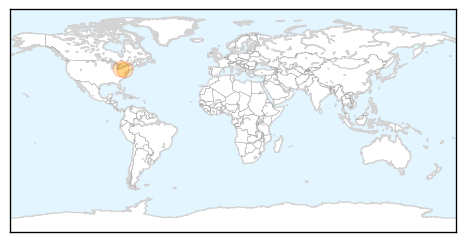
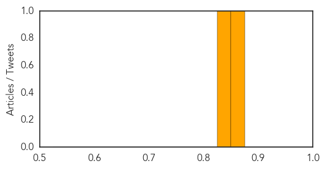
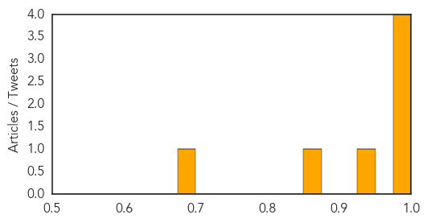

Hepatitis
30-Day Web Trend
0 alerts, 0 warnings

30-Day Twitter Trend
1 alerts, 0 warnings

Article Locations
Article Confidences
Top Articles:
Top Tweets:
-
No tweets found for Mar 23, 2015
Cholera
30-Day Web Trend
0 alerts, 0 warnings

30-Day Twitter Trend
2 alerts, 0 warnings

Article Locations

Article Confidences
Top Articles:
- 1.000
- Roundup: Cholera under control as Harare remains on high alert
- 1.000
- Cholera under control as Harare remains on high alert - Xinhua
- 0.987
- Southern Africa Weekly Report Map (17th to 23rd March 2015) - Malawi
- 0.982
- Ugandan hospital turns down DRC Cholera patients
- 0.929
- Malawi: Southern Africa Weekly Report Map (17th to 23rd March 2015)
- 0.864
- Life-saving water, sanitation and hygiene supplies reaching children affected by Cyclone Pam
- 0.691
- Clean water for all Filipinos
Top Tweets:
-
No tweets found for Mar 23, 2015